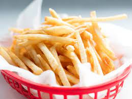

French Fries

Description
French Fries are by far one of the best sides for any meal and one of the best snacks to every exist!
They are the finishing touch to burgers, chicken nuggets, and any happy meal from Mcdonalds
Ingredients:
Steps:
- First, Peel and chop the potatoes
- Next, put them in a bowl of cold water
- Then, put 2 teaspons of vinegar and 2 tablespoons of salt
- Next, soak for 3 hours
- Lastly, dry and fry them in vegetable oil at high heat